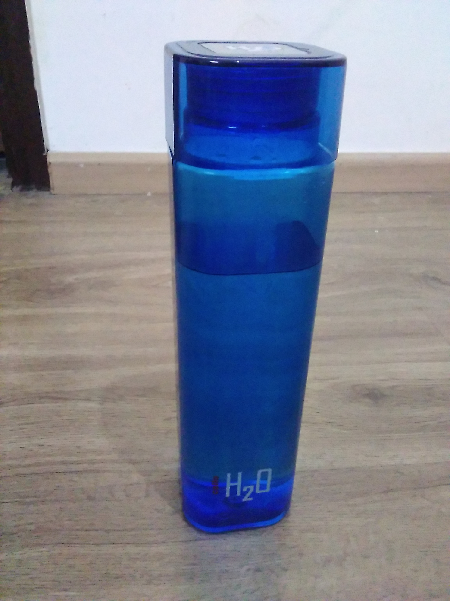
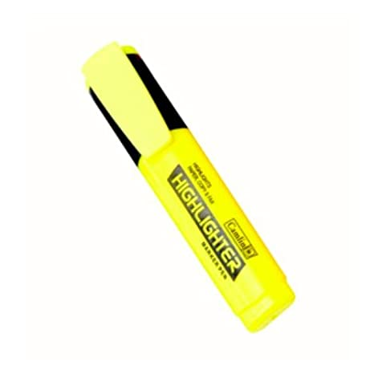

Case Study between Google Lens and Mobilenet
Google Lens

VS
-

Output on GOOGLE LENS - Water Bottle
Output on Mobilenet Model - Water Bottle
Results
Draw
-

Output on GOOGLE LENS - Textliner
Output on Mobilenet Model - Pencil Eraser
Results
GOOGLE LENS Is More Accurate
-

Output on GOOGLE LENS - Pillow
Output on Mobilenet Model - Pillow
Results
Draw
-

Output on GOOGLE LENS - Pencil
Output on Mobilenet Model - Pencil
Results
Draw
-

Output on GOOGLE LENS - School Bag
Output on Mobilenet Model - Luggage
Results
GOOGLE LENS Is More Accurate
I have tested 5 images
GOOGLE LENS have predicted all of them more accurately. And MOBILENET was less accurately
So according to my case study GOOGLE LENS is more Accurate